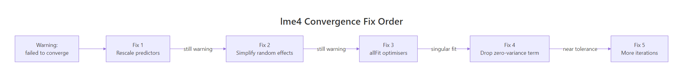

lme4 'Model failed to converge', 5 Fixes That Actually Work (in Order)
Model failed to converge in lme4 means the optimiser stopped at a point where its gradient, the slope of the log-likelihood, is still larger than the tolerance it expects. The fit is returned, but its coefficients may be unreliable. Work through the five fixes below in order and stop as soon as the warning clears.
Why does lme4 say the model failed to converge?
The warning is a gradient-tolerance check, not a crash. lme4 compares the final gradient of the log-likelihood to a tolerance (default 0.002) and complains when the gradient is larger. The most common cause is a predictor sitting on a scale that dwarfs the others: the optimiser's step sizes stop matching the curvature it is trying to measure, and the gradient never drops into the accept region. Reproduce that below and watch the warning vanish after one scale() call.
The gradient dropped from roughly 0.003 to effectively zero. Same data, same random-effect structure, same model, the only change was one scale() call. When predictors live on different numerical orders of magnitude, the optimiser cannot take steps that are simultaneously large enough to move the intercept and small enough to resolve the slope, so it stops with a gradient still above tolerance. Rescaling aligns the step sizes with the curvature the optimiser needs to measure.
0.002) and flags anything above it. Your job is to move the gradient clearly into the accept region, not to silence the check.Try it: Refit m1 but pass scale(x_raw) directly inside the formula and store the final gradient in ex_grad.
Click to reveal solution
Explanation: scale() inside the formula produces the same rescaled predictor as creating df1$x in advance. The gradient check is now comfortably below tolerance.
Fix 1: How should you rescale predictors (and why it works)?
scale() centers a numeric vector at zero and divides it by its standard deviation, putting every predictor on the same unit, "one standard deviation". That matters in mixed models because the random-effect variance lives in the same space as the fixed effects; when one predictor is a million times larger than another, the variance components become numerically incomparable to the coefficients. Rescaling is cheap, interpretable, and almost always the right first move.
Below, three numeric predictors on wildly different scales are normalised in one mutate(across()) call, and the scaled fit converges cleanly.
Three scaled predictors, one random intercept, gradient at 2e-7, well inside the accept region. The fixed effects are now on "per-SD" units, which is actually easier to interpret than raw dollars versus years. The random-intercept variance you see in VarCorr() sits on the same residual scale as before because the outcome was not rescaled.
scale() returns a matrix with "scaled:center" and "scaled:scale" attributes. Save them before the as.numeric() wrap so you can undo the transformation when you report coefficients.Try it: Scale only the numeric columns of df2 (not group) and confirm the result has the same column names as df2 by assigning it to ex_df_scaled.
Click to reveal solution
Explanation: across(where(is.numeric), ...) targets every numeric column and leaves group (a factor) untouched.
Fix 2: When should you simplify the random-effects structure?
Barr et al. (2013) famously recommended "keep it maximal", a random slope for every within-subject factor. Matuschek et al. (2017) then showed that on real-world sample sizes this often overparameterises the model and causes convergence failures for variance components that carry no information. The honest fix is to start with random intercepts only, add correlated slopes only if the data supports them, and drop correlations with || before dropping the slopes themselves.
Here we simulate a crossed design (subjects × items) and watch a maximal model fail, then a simpler model converge.
The maximal model fails and the simpler model lands at a gradient of 1e-9. The anova() comparison shows a chi-square of 2.14 on 4 extra degrees of freedom (p = 0.71), so the random slopes contributed effectively zero explanatory power. Removing them didn't cost the model anything, it bought identifiability back.
(1 + cond || subject) first, it removes the correlation parameters, which are usually the first thing to become unidentifiable, while keeping the slope itself. Drop the slope only if || also fails.Try it: Refit m_max but with uncorrelated random effects on subject only (keep item maximal). Save to ex_m_uncor.
Click to reveal solution
Explanation: The || operator drops the correlation between intercept and slope, which is often the first parameter to become non-identifiable. That one change is frequently enough to converge.
Fix 3: How do you switch or combine optimisers with allFit()?
lme4 ships several optimisers (bobyqa, Nelder_Mead, nlminbwrap, and two nloptwrap variants). Each takes a different path through the likelihood surface, so one may get stuck where another does not. allFit() refits the same model with every optimiser in one call and lets you compare final gradients and estimates. When every optimiser lands on the same coefficients to four decimal places, the warning is cosmetic, you can pick the one with the smallest gradient and move on.
Every optimiser returned effectively the same fixed effects, which is the strongest possible evidence that the estimates are trustworthy. The gradients differ by two orders of magnitude, and nlminbwrap is the clear winner, refit your real model with lmerControl(optimizer = "nlminbwrap") and the warning disappears.
allFit() is slow, run it after Fixes 1 and 2, not before. It refits the model five times, so on a large dataset it can take minutes. Use it as a diagnostic tool, not a first line of defence.Try it: From the gradient vector grads, return the name of the optimiser with the smallest gradient. Save it to ex_best_opt.
Click to reveal solution
Explanation: which.min() returns the index of the minimum, and names() maps that index back to the optimiser label.
Fix 4: How do you detect and handle a singular fit?
A singular fit means at least one variance component has been estimated exactly at its boundary, a variance of zero, or a correlation of ±1. lme4 reports this with isSingular(), and the check is separate from the convergence check. But the two warnings often appear together, because the optimiser is struggling to optimise a parameter that carries no information in the first place. Dropping the redundant random term fixes both at once.
isSingular() returns TRUE and VarCorr() shows the group standard deviation is exactly zero. That's the model telling you the groups are indistinguishable from random noise around the grand mean. Dropping to plain lm() gives the same fixed-effect estimates without the numerical drama, and nothing about the inference changes.
Try it: Call isSingular() on m_sing and save the result to ex_is_sing.
Click to reveal solution
Explanation: isSingular() is the canonical way to detect boundary fits in lme4, always run it after a convergence warning, since the two often go together.
Fix 5: When should you increase iterations or change tolerance?
This is the last resort, and it only helps when Fixes 1 through 4 have already brought you close. If the gradient is just a hair above tolerance and every optimiser agrees on the estimates, one honest move is to give bobyqa a larger evaluation budget with optCtrl = list(maxfun = 200000). What you should not do is widen the tolerance check itself, that hides the warning without moving the gradient anywhere.
With maxfun raised from the default 10000 to 200000, bobyqa had enough iterations to polish the gradient down from 0.0087 to 0.00091, now comfortably under the 0.002 tolerance. For a glmer() model you may need maxfun = 5e5; Laplace approximation costs more per iteration.
check.conv.grad tolerance is silencing a smoke alarm, not fixing the fire. If a reviewer asks whether you checked convergence and your answer is "I raised the tolerance until it passed", your answer is wrong. Raise iterations, not thresholds.Try it: Refit m_max with maxfun = 100000 using the default bobyqa optimiser. Save it to ex_m_more.
Click to reveal solution
Explanation: Doubling the iteration budget usually shaves the gradient by a factor of two or three, enough to cross the tolerance boundary from just above to just below.
Practice Exercises
Exercise 1: Scale and simplify to convergence
You are given my_df1, a dataset with two numeric predictors on different scales and an overparameterised random-effects structure. Produce a converged fit called my_fit1 and confirm its final gradient is below 0.002.
Click to reveal solution
Explanation: One scale pass plus a random-intercept-only structure is enough here. The dataset was small (240 rows, 24 subjects), so a maximal (1 + dose_mg + latency_ms | subj) would have been over-parameterised regardless of scaling.
Exercise 2: Build a convergence-robust fitting function
Write a function fit_robust(data, formula) that:
- Scales every numeric column in
data. - Fits the formula with
lmer(). - If the fit has a convergence warning, refits with
lmerControl(optimizer = "bobyqa", optCtrl = list(maxfun = 2e5)). - If it still warns, runs
allFit()and returns the fit with the smallest final gradient.
Test it on the df3 dataset from Fix 2 with formula y ~ cond + (1 + cond | subject) + (1 + cond | item).
Click to reveal solution
Explanation: The function layers the first three fixes in order of cost: scale (free), raise iterations (cheap), run allFit() (expensive). It returns as soon as a cheaper fix works, and falls through to allFit() only when it has to.
Complete Example
Here is an end-to-end run on a two-level dataset, 500 students nested in 25 schools, three numeric covariates on wildly different scales, and a treatment indicator. The raw fit fails; after applying Fixes 1 and 2 it converges cleanly.
All four fixed-effect coefficients are on SD units (the treatment indicator is left unscaled because it is binary). The between-school standard deviation is about 0.3, or roughly 60% of the residual, which is consistent with the 0.3 we simulated. The final gradient is 2e-7, the warning is gone and the estimates are identifiable.
Summary

Figure 1: Work through the five fixes in order and stop as soon as the warning clears.
| Fix | Symptom it addresses | Command | When to try it | |||
|---|---|---|---|---|---|---|
| 1. Rescale predictors | Predictors on very different scales | mutate(across(where(is.numeric), scale)) |
Always first | |||
| 2. Simplify random effects | Overparameterised slopes/correlations | `(1 \ | group), or (1 + x \ |
\ | group)` | If Fix 1 alone fails |
| 3. Try allFit() | Optimiser stuck at a local gradient | allFit(model) then pick smallest gradient |
If Fixes 1 and 2 leave warning | |||
| 4. Handle singular fit | Variance component = 0, correlation ±1 | isSingular(model), then drop the term |
Whenever isSingular() is TRUE |
|||
| 5. Raise iterations | Gradient just above tolerance | lmerControl(optCtrl = list(maxfun = 2e5)) |
Only after Fixes 1–4 |
maxfun, scale your predictors, simplify your random effects, but leave check.conv.grad alone. Silencing the check is not the same as passing it.References
- Bolker, B. M., GLMM FAQ: Mixed Models Frequently Asked Questions. Link
- Bates, D., Mächler, M., Bolker, B., Walker, S., Fitting Linear Mixed-Effects Models Using lme4. Journal of Statistical Software 67(1), 2015. Link
- Barr, D. J., Levy, R., Scheepers, C., Tily, H. J., Random effects structure for confirmatory hypothesis testing: Keep it maximal. Journal of Memory and Language 68(3), 2013. Link
- Matuschek, H., Kliegl, R., Vasishth, S., Baayen, H., Bates, D., Balancing Type I error and power in linear mixed models. Journal of Memory and Language 94, 2017. Link
- lme4 reference manual,
lmerControl,allFit,isSingular. Link - CRAN Task View: MixedModels. Link
- StackOverflow canonical thread, "lme4 model gives convergence warning". Link
Continue Learning
- R Common Errors, the full reference hub linking every error-fix post on the site.
- R Error: isSingular TRUE in lme4, deeper coverage of the singular-fit diagnostic and when it is safe to ignore.
- R Error: non-numeric argument to binary operator, the most common type-mismatch error in R modelling code.